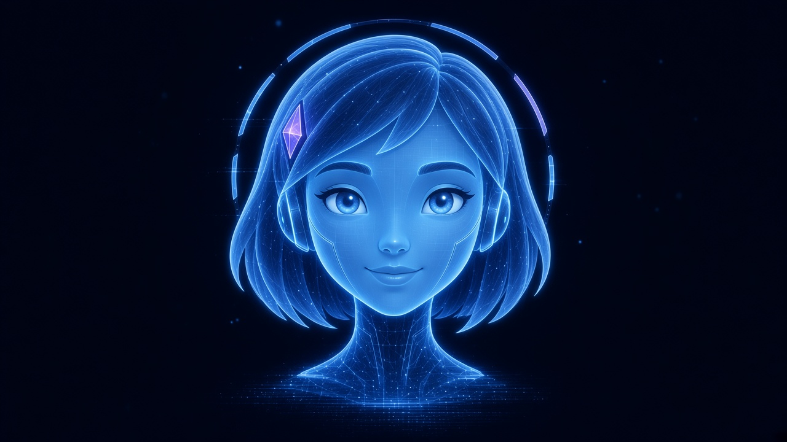
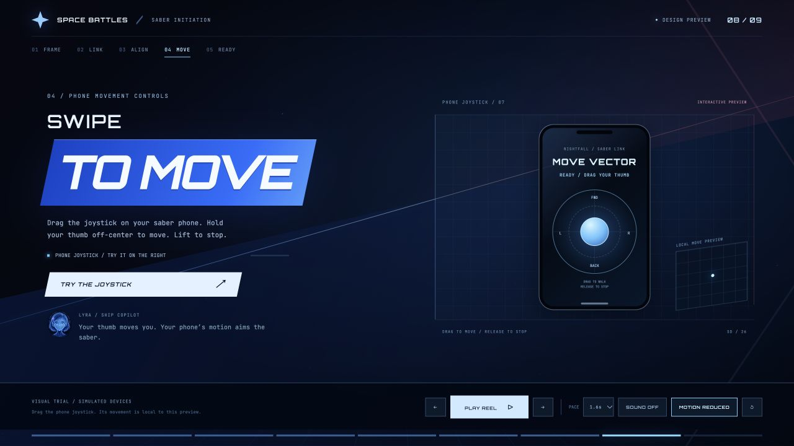
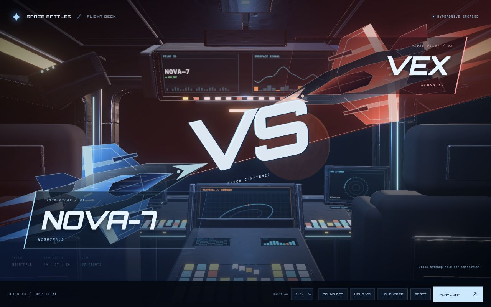

BUILD THESAME GALAXY
Flight-deck glass. Electric-blue mission graphics. Holographic precision. A cinematic moment when it matters.
Make one thing feel important.
This board shows the actual preview style. The full written guide includes exact CSS values, motion timings, component recipes, and integration guidance.
ORBITRON−12° PLATESRED / BLUE GLASSTwo fonts. Distinct jobs.
Uppercase names and commands. Tight heroic titles. Italic treatment and a slanted plate for cinematic emphasis.
Weight 800 · tracking −0.055em · line height 1.1
Drag the joystick on your saber phone. Hold to move. Release to stop.
Recommended gameplay copy: 14–16px
Meaningful data: 12–14px
The reference includes tiny atmospheric labels. Enlarge essential gameplay text and controls; the map must remain readable during use.
Deep navy holds the light.
#020711#175dff#87dcff#ff727f#f4fbffBlue and coral tint a dark underlying scene. Thin edges and low-opacity grids make it feel projected.
−12° title plates, −16° scene seam, 24px cut corners. Circles mark targets, orbits, and joystick input.
One active destination, blade, or transition seam gets the brightest light. Keep surrounding surfaces quiet.
One coordinated arrival.
The word crosses the screen, the hologram settles, then the details arrive. A single diagonal laser joins the moment. Use smaller transitions for ordinary selection.
Preview timers illustrate motion. Device readiness, travel acceptance, and battle start must follow actual application/server state. Reduced motion retains the same information.
The map gets the center.
Use a compact selected-world panel, one cyan reticle, quiet utility rails, and a small LYRA cue. Let planet lighting color the environment while the interface stays consistent.
MARS
Show the real dataset record, units, and configured arena effect here.
SAMPLE LAYOUT
LYRA / Your next destination awaits.Illustrative CSS planet and layout. No scientific terrain or connected map is represented here.
A brief CHOOSE YOUR / DESTINATION title, then settle into the compact exploration layout.
Reticle and details update with a small 180–250ms transition. Keep selection direct and interruptible.
Accepted action → one laser/warp → world arrival. Reuse the existing renderer and authoritative timing.
The source look.

Current cinematic preview: huge keyword plate, quiet support copy, holographic device. Its joystick is a local demonstration.

Earlier glass VS reference: diagonal red/blue transparency, slanted nameplates, large VS, and the existing cockpit underneath.
Everything Alan needs.
Fonts, exact colors, alpha, geometry, layout, component recipes, motion, controls, accessibility, source map.
Screen composition, state-driven transitions, integration order, team interfaces, acceptance checks.
A ready-to-use brief with guardrails for working in the current branch.
Newly consolidated names for the values used in this preview. Scope them when integrating.
Working standalone HTML/CSS/JS plus LYRA and QR assets. No build needed.
Historical React/Three.js animation sources and screenshots are included under reference/.
Current movement direction: thumb joystick on the saber phone; drag/hold moves, release stops, phone motion aims. The older free-hand pinch lesson is superseded for this design.